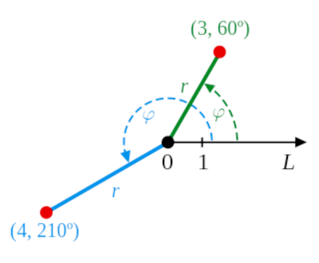
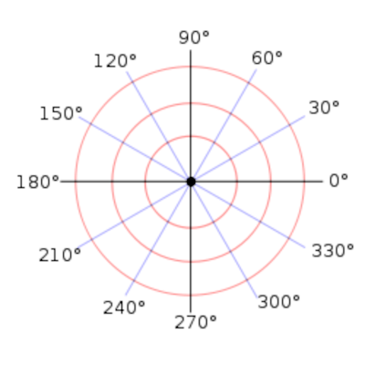
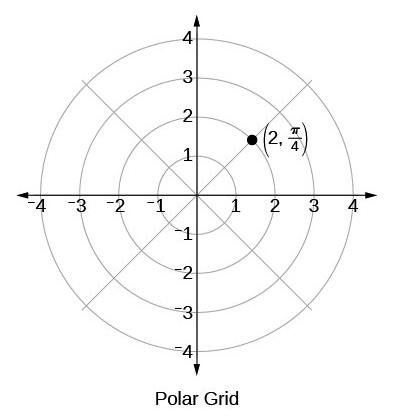
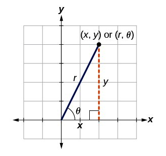
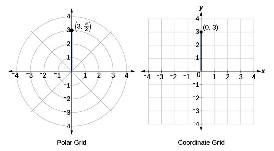
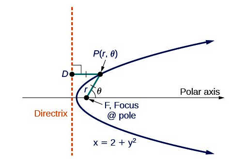
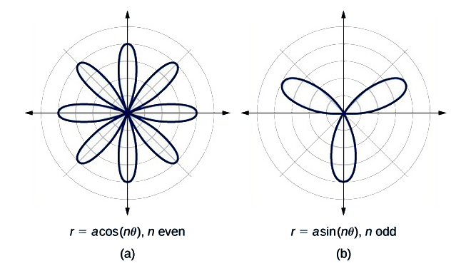
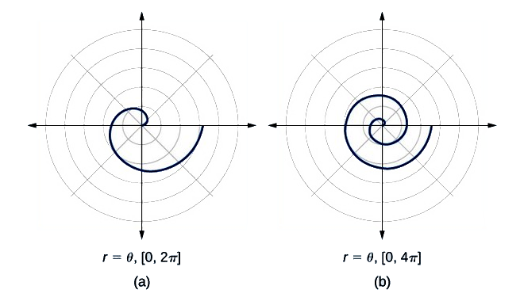
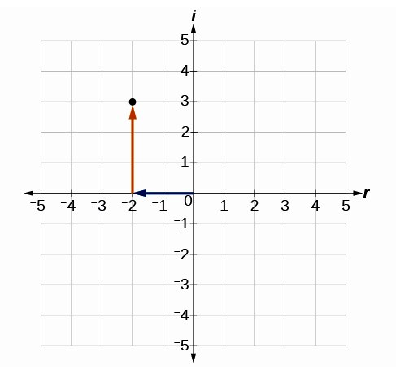
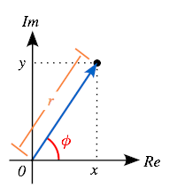

Table of Contents
14. Complex Numbers and Polar Coordinates
14.1. The Polar Coordinate System
14.1.1. Introduction to the Polar Coordinate System
14.1.2. Converting Between Polar and Cartesian Coordinates
14.1.3. Conics in Polar Coordinates
14.1.4. Other Curves in Polar Coordinates
14.2. Complex Numbers
14.2.1. Introduction to Complex Numbers
14.2.2. Addition and Subtraction of Complex Numbers
14.2.3. Multiplication of Complex Numbers
14.2.4. Complex Numbers and the Binomial Theorem
14.2.5. Complex Conjugates
14.2.6. Division of Complex Numbers
14.2.7. Complex Numbers in Polar Coordinates
14. Complex Numbers and Polar Coordinates
14.1. The Polar Coordinate System
14.1.1. Introduction to the Polar Coordinate System
The polar coordinate system is an alternate coordinate system where the two variables are $r$ and $\theta$ , instead of $x$ and $y$ .
Learning Objective
Discuss the characteristics of the polar coordinate system
Key Point
- A polar coordinate system is a two-dimensional coordinate system in which each point on a plane is determined by a distance from a reference point and an angle from a reference direction.
Key Terms
- polar axis
- A ray from the pole in the reference direction.
- angular coordinate
- An angle measured from the polar axis, usually counter-clockwise.
- radius
- A distance measured from the pole.
- pole
- The reference point of the polar graph.
Introduction of Polar Coordinates
In mathematics, the polar coordinate system is a two-dimensional coordinate system in which each point on a plane is determined by a distance from a reference point and an angle from a reference direction.
When we think about plotting points in the plane, we usually think of rectangular coordinates $(x,y)$ in the Cartesian coordinate plane. However, there are other ways of writing a coordinate pair and other types of grid systems. Polar coordinates are points labeled $(r,)$ and plotted on a polar grid. The polar grid is represented as a series of concentric circles radiating out from the pole, or the origin of the coordinate plane.
The reference point (analogous to the origin of a Cartesian system) is called the pole, and the ray from the pole in the reference direction is the polar axis. The distance from the pole is called the radial coordinate or radius, and the angle is called the angular coordinate, polar angle, or azimuth. The radial coordinate is often denoted by $r$ or $$ , and the angular coordinate by $$ , $$ , or $t$ .
{kind=link}
Points in the polar coordinate system with pole $0$ and polar axis $L$ . In green, the point with radial coordinate $3$ and angular coordinate $60$ degrees or $(3,60^{\circ})$ . In blue, the point $(4,210^{\circ})$ .
{kind=link}
A polar grid with several angles labeled in degrees
Angles in polar notation are generally expressed in either degrees or radians ($2\pi $ rad being equal to $360^{\circ}$ ). Degrees are traditionally used in navigation, surveying, and many applied disciplines, while radians are more common in mathematics and mathematical physics. In many contexts, a positive angular coordinate means that the angle $$ is measured counterclockwise from the axis. In mathematical literature, the polar axis is often drawn horizontal and pointing to the right.
Plotting Points Using Polar Coordinates
The polar grid is scaled as the unit circle with the positive $x$-axis now viewed as the polar axis and the origin as the pole. The first coordinate $r$ is the radius or length of the directed line segment from the pole. The angle $$ , measured in radians, indicates the direction of $r$ . We move counterclockwise from the polar axis by an angle of $$ ,and measure a directed line segment the length of $r$ in the direction of $$ . Even though we measure $$ first and then $r$ , the polar point is written with the $r$ -coordinate first. For example, to plot the point $(2,\frac{\pi }{4})$ ,we would move $\frac{\pi }{4}$ units in the counterclockwise direction and then a length of $2$ from the pole. This point is plotted on the grid in Figure.
{kind=link}
Plot of the point $(2,\frac{\pi }{4})$ ,by moving $\frac{\pi }{4}$ units in the counterclockwise direction and then a length of $2$ from the pole.
Uniqueness of polar coordinates
Adding any number of full turns ($360^{\circ} $ or $2\pi$ radians) to the angular coordinate does not change the corresponding direction. Also, a negative radial coordinate is best interpreted as the corresponding positive distance measured in the opposite direction. Therefore, the same point can be expressed with an infinite number of different polar coordinates($r, \phi \pm n\cdot 360$ ) or ($-r, \phi \pm (2n + 1)\cdot 180$ ), where $n$ is any integer. Moreover, the pole itself can be expressed as ($0, $ ) for any angle $$ .
14.1.2. Converting Between Polar and Cartesian Coordinates
Polar and Cartesian coordinates can be interconverted using the Pythagorean Theorem and trigonometry.
Learning Objective
Derive and use the formulae for converting between Polar and Cartesian coordinates
Key Points
- To convert from polar to rectangular (Cartesian) coordinates use the following formulas (derived from their trigonometric function definitions):
Polar Coordinates to Rectangular (Cartesian) Coordinates
When given a set of polar coordinates, we may need to convert them to rectangular coordinates. To do so, we can recall the relationships that exist among the variables $x$ , $y$ , $r$ , and $$ , from the definitions of $\cos \theta$ and $\sin \theta$ . Solving for the variables $x$ and $y$ yields the following formulas:
$\displaystyle \cos \theta =\frac{x}{r}\quad\Rightarrow\quad x=r\cos \theta $
$\displaystyle \sin \theta =\frac{y}{r}\quad\Rightarrow\quad y=r\sin \theta $
An easy way to remember the equations above is to think of $\cos\theta$ as the adjacent side over the hypotenuse and $\sin\theta$ as the opposite side over the hypotenuse. Dropping a perpendicular from the point in the plane to the $x$-axis forms a right triangle, as illustrated in Figure below.
{kind=link}
A right triangle with rectangular (Cartesian) coordinates and equivalent polar coordinates.
To convert polar coordinates $(r,)$ to rectangular coordinates $(x,y)$ follow these steps:
1) Write $\cos \theta =\frac{x}{r}\Rightarrow x=r\cos \theta $ and $\sin \theta =\frac{y}{r}\Rightarrow y=r\sin \theta $ .
2) Evaluate $\cos\theta$ and $\sin\theta$ .
3) Multiply $\cos\theta$ by $r$ to find the $x$ -coordinate of the rectangular form.
4) Multiply $\sin\theta$ by $r$ to find the $y$ -coordinate of the rectangular form.
Example: Write the polar coordinates $(3,\frac {\pi}{2})$ as rectangular coordinates.
The rectangular coordinates are $(0,3)$ .
{kind=link}
The rectangular coordinate $(0,3)$ is the same as the polar coordinate $(3,\frac {\pi}{2})$ as plotted on the two grids above.
Rectangular (Cartesian) Coordinates to Polar Coordinates
To convert rectangular coordinates to polar coordinates, we will use two other familiar relationships. With this conversion, however, we need to be aware that a set of rectangular coordinates will yield more than one polar point.
Converting from rectangular coordinates to polar coordinates requires the use of one or more of the relationships illustrated below. Recall:
{kind=link}
A right triangle with rectangular (Cartesian) coordinates and equivalent polar coordinates.
Example: Convert the rectangular coordinates $(3,3)$ to polar coordinates.
We are given the values of $x$ and $y$ and need to solve for $\theta$ and $r$ . Start by solving for $\theta$ using the $\tan$ function:
So:
Next substitute the values of $x$ and $y$ into the formula $r^2=x^2+y^2$ and solve for $r$ .
So:
The polar coordinates are $(3\sqrt2,\frac{\pi}{4})$ .
Note that $r^2 = 18$ implies $r=\pm\sqrt{18}$ . We chose to ignore the negative $r$ value. Also note that $\tan^{-1}\left( 1 \right)$ has many answers. This corresponds to the non-uniqueness of polar coordinates. Multiple sets of polar coordinates can have the same location as our first solution. For example, the points $(-3\sqrt2,\frac{5\pi}{4})$ and $(3\sqrt2,-\frac{7\pi}{2})$ will coincide with the original solution of $(3\sqrt2,\frac{\pi}{4})$ .
14.1.3. Conics in Polar Coordinates
Polar coordinates allow conic sections to be expressed in an elegant way.
Learning Objective
Describe the equations for different conic sections in polar coordinates
Key Points
- Conic sections have several key features which define their polar equation; foci, eccentricity, and a directrix.
- All conic sections have the same basic equation in polar coordinates, which demonstrates a connection between all of them.
Key Terms
- eccentricity
- A measure of deviation from a prescribed curve.
- directrix
- A fixed line used to described a curve.
Defining a Conic
Previously, we learned how a parabola is defined by the focus (a fixed point) and the directrix (a fixed line).
{kind=link}
Consider the parabola $x=2+y^2$ . Any conic may be determined by three characteristics: a single focus, a fixed line called the directrix, and the ratio of the distances of each to a point on the graph.
We can define any conic in the polar coordinate system in terms of a fixed point, the focus $P(r,)$ at the pole, and a line, the directrix, which is perpendicular to the polar axis.
For a conic with eccentricity $e$ ,
- If $0e<1$ , the conic is an ellipse.
- If $e=1$ , the conic is a parabola.
- If $e>1$ , the conic is an hyperbola.
With this definition, we may now define a conic in terms of the directrix: $x=p$ , the eccentricity $e$ , and the angle $\theta$ . Thus, each conic may be written as a polar equation in terms of $r$ and $\theta$ .
For a conic with a focus at the origin, if the directrix is $x=p$ , where $p$ is a positive real number, and the eccentricity is a positive real number $e$ , the conic has a polar equation:
For a conic with a focus at the origin, if the directrix is $y=p$ , where $p$ is a positive real number, and the eccentricity is a positive real number $e$ , the conic has a polar equation:
14.1.4. Other Curves in Polar Coordinates
Some curves have a simple expression in polar coordinates, whereas they would be very complex to represent in Cartesian coordinates.
Learning Objective
Describe the equations for spirals and roses in polar coordinates
Key Points
- The formulas that generate the graph of a rose curve are given by: $r=a\:\cos n\theta$ and $r=a\:\sin n\theta$ where $a0$ . If $n$ is even, the curve has $2n$ petals. If $n$ is odd, the curve has $n$ petals.
- The formula that generates the graph of the Archimedes’ spiral is given by: $r=$ for $0$ . As $\theta$ increases, $r$ increases at a constant rate in an ever-widening, never-ending, spiraling path.
Key Terms
- Archimedes’ spiral
- A curve given by an equation of the form
$r=a + b\theta$ - rose curve
- A curve given by an equation of the form
$r = a\cos n\theta$ or$r=a\sin n\theta$
To graph in the rectangular coordinate system we construct a table of $x$ and $y$ values. To graph in the polar coordinate system we construct a table of $r$ and $\theta$ values. We enter values of $\theta$ into a polar equation and calculate $r$ . However, using the properties of symmetry and finding key values of $\theta$ and $r$ means fewer calculations will be needed.
Investigating Rose Curves
Polar equations can be used to generate unique graphs. The following type of polar equation produces a petal-like shape called a rose curve. Although the graphs look complex, a simple polar equation generates the pattern. The formulas that generate the graph of a rose curve are given by:
$\displaystyle r=a\cdot\cos \left( n\theta \right) \qquad \text{and} \qquad r=a\cdot\sin \left( n\theta \right) \qquad \text{where} \qquad a\ne 0$
If $n$ is even, the curve has $2n$ petals. If $n$ is odd, the curve has $n$ petals.
{kind=link}
Complex graphs generated by the simple polar formulas that generate rose curves:$r=a\:\cos n\theta$ and $r=a\:\sin n\theta$ where $a0$ . For the cosine curve, n is even, and the curve has 8 petals (four centered on each of the axes, and four in between them). The petals all meet at the origin. For the sine curve, n is odd, and the curve has 3 petals; one centered on the negative y axis, and one each in the second and first quadrants. The petals all meet at the origin.
Investigating the Archimedes' Spiral
Archimedes’ spiral is named for its discoverer, the Greek mathematician Archimedes ($c. 287 BCE - c. 212 BCE$ ), who is credited with numerous discoveries in the fields of geometry and mechanics.
The formula that generates the graph of the Archimedes’ spiral is given by:
$\displaystyle r=a + b\theta \qquad \text{for} \qquad \theta\geq 0$
As $\theta$ increases, $r$ increases at a constant rate in an ever-widening, never-ending, spiraling path.
{kind=link}
The formula that generates the graph of a spiral is $r=$ for $0$ . Spirals going out counterclockwise from the origin. From theta = 0 to 2pi the spiral makes one rotation, and then another rotation if theta runs from 0 to 4pi.
14.2. Complex Numbers
14.2.1. Introduction to Complex Numbers
A complex number has the form $a+bi$ , where $a$ and $b$ are real numbers and $i$ is the imaginary unit.
Learning Objective
Describe the properties of complex numbers and the complex plane
Key Points
- A complex number is a number that can be expressed in the form $a+bi$ , where $a$ and $b$ are real numbers and $i$ is the imaginary unit.
- The real number $a$ is called the real part of the complex number $z=a+bi$ and is denoted $\text{Re}\{a+bi\}=a$ . The real number $b$ is called the imaginary part of $z=a+bi$ and is denoted $\text{Im}\{a+bi\}=b$ .
Key Terms
- real number
- An element of the set of real numbers. The set of real numbers include the rational numbers and the irrational numbers, but not all complex numbers.
- imaginary number
- a number of the form
$ai$ , where$a$ is a real number and$i$ the imaginary unit - complex
- a number, of the form
$a+bi$ , where$a$ and$b$ are real numbers and$i$ is the square root of$-1$ .
The Complex Number System
A complex number is a number that can be put in the form $a+bi$ where $a$ and $b$ are real numbers and $i$ is called the imaginary unit, where $i^2=-1$ . In this expression, $a$ is called the real part and $b$ the imaginary part of the complex number. We will write $\text{Re}\{a+bi\}=a$ to indicate the real part of the complex number, and $\text{Im}\{a+bi\}=b$ to indicate the imaginary part.
For example, to indicate that the real part of the number $2+3i$ is $2$ , we would write $\text{Re}\{2+3i\}=2$ . To indicate that the imaginary part of $4-5i$ is $-5$ , we would write $\text{Im}\{4-5i\} = -5$ .
Complex numbers extend the idea of the one-dimensional number line to the two-dimensional complex plane by using the horizontal axis for the real part and the vertical axis for the imaginary part. The complex number $a+bi$ can be identified with the point $(a,b)$ . Thus, for example, complex number $-2+3i$ would be associated with the point $(-2,3)$ and would be plotted in the complex plane as shown below.
{kind=link}
The complex number $-2+3i$ is plotted in the complex plane, $2$ to the left on the real axis, and $3$ up on the imaginary axis.
A complex number whose real part is zero is said to be purely imaginary, whereas a complex number whose imaginary part is zero is a real number. In this way, the set of ordinary real numbers can be thought of as a subset of the set of complex numbers. It is beneficial to think of the set of complex numbers as an extension of the set of real numbers. This extension makes it possible to solve certain problems that can't be solved within the realm of the set of real numbers.
Complex numbers are used in many scientific fields, including engineering, electromagnetism, quantum physics, and applied mathematics, such as chaos theory.
Complex numbers allow for solutions to certain equations that have no real number solutions. For example, the equation:
has no solution if we restrict ourselves to the real numbers, since the square of a real number is never negative. However, we can see that the complex numbers $1+3i$ and $1-3i$ are solutions, since
$\begin{align}\left(1+3i-1\right)^2&=(3i)^2\\&=9i^2\\&=-9\end{align}$
and
$\begin{align} \left(1-3i-1\right)^2 &=(-3i)^2 \\& =9i^2\\&=-9 \end{align}$
It turns out that if we allow $x$ to be a complex number, then any polynomial equation in $x$ of degree $n$ will have $n$ (not necessarily unique) solutions.
14.2.2. Addition and Subtraction of Complex Numbers
Complex numbers can be added and subtracted by adding the real parts and imaginary parts separately.
Learning Objective
Calculate the sums and differences of complex numbers by adding the real parts and the imaginary parts separately
Key Points
- Complex numbers can be added and subtracted to produce other complex numbers. This is done by adding the corresponding real parts and the corresponding imaginary parts.
- It is possible for two non-real complex numbers to add to a real number. However, two real numbers can never add to be a non-real complex number.
Sums of Complex Numbers
Complex numbers can be added and subtracted to produce other complex numbers. This is done by adding the corresponding real parts and the corresponding imaginary parts.
For example, the sum of $2+3i$ and $5+6i$ can be calculated by adding the two real parts $(2+5)$ and the two imaginary parts $(3+6)$ to produce the complex number $7+9i$ . Note that this is always possible since the real and imaginary parts are real numbers, and real number addition is defined and understood.
As another example, consider the sum of $1-3i$ and $4+2i$ . In this case, we would add $1$ and $4$ to produce $5$ and also would add $-3$ and $2$ to produce $-1$ . Thus we would write:
$(1-3i)+(4+2i)=5-i$
Differences (Subtraction) of Complex Numbers
In a similar fashion, complex numbers can be subtracted. The key again is to combine the real parts together and the imaginary parts together, this time by subtracting them.
Thus to compute:
$(4-3i)-(2+4i)$
we would compute $4-2$ obtaining $2$ for the real part, and calculate $-3-4=-7$ for the imaginary part.
We would thus write $(4-3i)-(2+4i) = 2-7i$ .
Note that the same thing can be accomplished by imagining that you are distributing the subtraction sign over the sum $2+4i$ and then adding as defined above. Thus you could write:
$(4-3i)-(2+4i) = (4-3i)+(-2-4i) = 2-7i.$
Note that it is possible for two non-real complex numbers to add to a real number. For example, $(1-3i)+(1+3i)=2+0i=2$ . However, two real numbers can never add to be a non-real complex number.
14.2.3. Multiplication of Complex Numbers
Complex numbers can be multiplied using the FOIL algorithm.
Learning Objective
Calculate the product of complex numbers using FOIL and the properties of
Key Points
- The imaginary unit $i$ has the property that $i^2=-1$
- Complex numbers can be multiplied using the FOIL algorithm
The Square of the Imaginary Unit $i$
In the following calculations, it is important to remember that $i^2=-1$ . It is best to not let this fact confuse you, but to just remember it as a fact. Any time an $i^2$ appears in a calculation, it can be replaced by the real number $-1.$
Multiplying Complex Numbers
Two complex numbers can be multiplied to become another complex number. The key to performing the multiplication is to remember the acronym FOIL, which stands for First, Outer, Inner, Last. Thus, we multiply $a+bi$ and $c+di$ by writing $(a+bi)(c+di)$ and multiplying the First terms $a$ and $c$ , and then the Outer terms $a$ and $di$ and then the Inner terms $bi$ and $c$ and then the Last terms $bi$ and $di$ . Note that this last multiplication yields a real number, since:
$bi\cdot di = bd \cdot i^2=bd\cdot (-1) =-bd$
Note that the FOIL algorithm produces two real terms (from the First and Last multiplications) and two imaginary terms (from the Outer and Inner multiplications). We then combine these to write our complex number in standard form. Thus we have:
$(a+bi)(c+di)=ac+adi+bci-bd=(ac-bd)+(ad+bc)i$ .
For example, consider the product $(2+3i)(4+5i)$ .
We would compute:
$\begin {align}(2+3i)(4+5i)&=8+10i+12i-15 \\&=(8-15)+(10+12)i \\&=-7+22i \end {align}$
As another example, consider the product:
$\begin {align}(1-i)(2+4i)&=1\cdot 2 +1\cdot 4i -2 i -(4i^2) \\&= 2+2i-(-4) \\&=6+2i \end {align}$
Note that if a number has a real part of $0$ , then the FOIL method is not necessary. For example:
Similarly, a number with an imaginary part of $0$ is easily multiplied as this example shows: $(2+0i)(4-3i)=2(4-3i)=8-6i.$
Note that it is possible for two nonreal complex numbers to multiply together to be a real number. For example:
14.2.4. Complex Numbers and the Binomial Theorem
Powers of complex numbers can be computed with the the help of the binomial theorem.
Learning Objective
Connect complex numbers raised to a power to the binomial theorem
Key Points
- The binomial theorem can be used to compute powers of complex numbers. To compute $(a+bi)^n$ we consider the expression $(x+y)^n $ where $x=a$ and $y=bi$ .
- The powers of $i$ are $i^2=-1$ , $i^3=-i$ , $i^4=1$ , and $i^5=i$ , etc.
The Powers of $i$
In what follows, it is useful to keep in mind the powers of the imaginary unit $i$ :
$\begin {align}i^1&=i \\i^2&=-1 \\i^3&=-i \\i^4&=1 \end {align}$
After that, they repeat, since $i^5=i^4\cdot i = i$ .
Computing Powers of Complex Numbers
Powers of complex numbers can be computed with the the help of the binomial theorem. Recall the binomial theorem, which tells how to compute powers of a binomial like $x+y$ . It says:
${ (x+y) }^{ n }=\sum _{ k=0 }^{ n }{ \begin{pmatrix} n \\ k \end{pmatrix} } { x }^{ n-k }{ y }^{ k }=\sum _{ k=0 }^{ n }{ \begin{pmatrix} n \\ k \end{pmatrix} } { x }^{ k }{ y }^{ n-k }$
For example, consider the case $n=4.$ We have:
$(x+y)^4 = x^4 +4x^3y+6x^2y^2 + 4xy^3+y^4$
We can use this to compute the fourth power of a complex number $a+bi$ by letting $x=a$ and $y=bi$ . Then we have:
$(a+bi)^4=a^4+4a^3bi+6a^2b^2i^2+4ab^3i^3+b^4i^4$
Now recalling the powers of $i$ , we have:
$(a+bi)^4 = a^4+4a^3bi-6a^2b^2+-4ab^3i+b^4$
If we gather the real terms and the imaginary terms, we have the complex number:
$(a^4-6a^2b^2+b^4)+(4a^3b-4ab^3)i$
Example 1
Suppose you wanted to compute $(2+3i)^4$ . Using the previous example as a guide, we have:
$(2+3i)^4=2^4+4\cdot 2^3\cdot 3i -6\cdot 2^2\cdot 3^2 -4\cdot 2 \cdot 3^3 i +3^4 $
which can be written as:
$16 + 96i-216-216i+81 = -119-120i$
Example 2
Suppose you wanted to compute $(1+i)^3$ . Using the binomial theorem directly, this can be written as:
$1^3+3\cdot 1^2 \cdot i + 3\cdot 1 \cdot i^2+i^3$
which can be simplified to:
Example 3
Suppose you wanted to compute $(2+i)^5$ . Recall that the binomial coefficients (from the 5th row of Pascal's triangle) are $1, 5, 10, 10, 5, \text{and}\, 1.$ Using the binomial theorem directly, we have:
$(2+i)^5 =2^5 + 5\cdot 2^4 i + 10\cdot 2^3 i^2 + 10\cdot 2^2 i^3 + 5\cdot 2 \cdot i^4 + i^5$
This can in turn be written as:
$32+80i-80-40i+10+i = -38+41i$
14.2.5. Complex Conjugates
The complex conjugate of the number $a+bi$ is $a-bi$ . Two complex conjugates of each other multiply to be a real number with geometric significance.
Learning Objective
Explain how to find a complex number's conjugate and what it is used for
Key Points
- The complex conjugate of $a+bi$ is $a-bi$ , and vice versa.
- Two complex conjugates multiply together to be the square of the length of the complex number.
- If a complex number is a root of a polynomial equation, then its complex conjugate is a root as well.
Key Terms
- complex conjugate
- For the number
$a + bi$ , this is$a-bi$ . - modulus
- The length of a complex number,
$\sqrt{a^2+b^2}$
Complex Conjugates
The complex conjugate (sometimes just called the conjugate) of a complex number $a+bi$ is the complex number $a-bi$ .
Thus, for example, the conjugate of $2+3i$ is $2-3i$ and the conjugate of $1-5i$ is $1+5i$ . Since the conjugate of a conjugate is the original complex number, we say that the two numbers are conjugates of each other.
The symbol for the complex conjugate of $z$ is $\overline{z}$ . So, we might write:
$\overline{3-6i} = 3+6i.$
The Product of Two Conjugates
The product of two conjugates is always a real number. Note that:
$(a+bi)(a-bi)=a^2-abi+abi-b^2i^2=a^2+b^2$
This number has a geometric significance.

The length of the line segment from the origin to the point $a+bi$ is $\sqrt{a^2+b^2}$ . This comes from the Pythagorean Theorem. The x-axis is the real axis and the imaginary axis is the y-axis. The point a + bi is in the first quadrant in this image, with x (real) coordinate a and y (imaginary) coordinate b.
The number $a^2+b^2$ is the square of the length of the line segment from the origin to the number $a+bi$ . The number $\sqrt{a^2+b^2}$ is called the length or the modulus of the complex number $z=a+bi$ . The symbol for the modulus of $z$ is $\left|z\right|$ . Thus we can write
$\begin{align} z\overline{z} &= (a+bi)(a-bi)\\&=a^2+b^2\\&=\left|z\right|^2 \end{align}$
Or in other words:
$\left|z\right|=\sqrt{z\overline{z}}$
The modulus symbol looks just like the absolute value symbol, which is okay because whenever $b=0$ so that $z=a+bi=a$ is a real number, we have that the conjugate is $a-bi=a$ . In this case we have
$\begin{align} \sqrt{z\overline{z}} &= \sqrt{a^2}\\&=\left|a\right|\\&=\left|z\right| \end{align}$
So the symbol is consistent with the use of the absolute value symbol.
Complex Roots Come in Conjugate Pairs
One important fact about conjugates is that whenever a complex number is a root of polynomial, its complex conjugate is a root as well. This can be seen in the quadratic formula whenever the discriminant $b^2-4ac$ is negative.
For example, consider the equation:
By the quadratic formula, the roots are
$x=\dfrac{-1 \pm \sqrt{1-4\cdot 1 \cdot 1}} {2} $
Simplifying gives the two complex numbers $-1/2+(\sqrt{3}/2)i$ and $-1/2-(\sqrt{3}/2)i$ , which are complex conjugates of each other.
14.2.6. Division of Complex Numbers
Division of complex numbers is accomplished by multiplying by the multiplicative inverse of the denominator. The multiplicative inverse of $z$ is $\frac{\overline{z}}{\left|z\right|^2}.$
Learning Objective
Use the complex conjugate to divide complex numbers
Key Points
- Division of complex numbers is accomplished by multiplying by the multiplicative inverse of the denominator.
- The multiplicative inverse of the complex number $z$ is $\frac{\overline{z}}{\left|z\right|^2}$
- If $w$ and $z$ are complex numbers, we have $\frac{w}{z} = w \cdot \frac{\overline{z}}{\left|z\right|^2}$
Multiplicative Inverses of Complex Numbers
We have seen how to add, subtract, and multiply complex numbers, but it remains to learn how to divide them. The key is to think of division by a number $z$ as multiplying by the multiplicative inverse of $z$ . You are probably already familiar with this concept for ordinary real numbers: dividing by $2$ is the same as multiplying by $\frac12$ , dividing by 3 is the same as multiplying by $\frac13$ , and so on. Algebraically, we write $\frac{x}{k} = x \cdot \frac1k$ .
For complex numbers, the multiplicative inverse can be deduced using the complex conjugate. We have already seen that multiplying a complex number $z=a+bi$ with its complex conjugate $\overline{z}=a-bi$ gives the real number $a^2+b^2$ .
Thus, we have $z\overline{z}=a^2+b^2$ , and dividing through by $a^2+b^2$ gives:
$z \cdot \frac{\overline{z}}{a^2+b^2}=1$
So the multiplicative inverse of $z$ must be the complex conjugate of $z$ divided by its modulus squared. We can write $\frac{1}{z}= \frac{\overline{z}}{\left|z\right|^2}$
Example 1
The multiplicative inverse of $1+2i$ is:
$\frac{1-2i}{1+4}=(1/5)-(2/5)i$
To see that this is correct, we can multiply these numbers to see if we get the multiplicative identity number $1$ . Using FOIL, we have:
$\begin {align}(1+2i)((1/5)-(2/5)i) &= 1/5 -(2/5)i+(2/5)i+4/5 \\&=1/5+4/5 \\&=1 \end {align}$
Example 2
The multiplicative inverse of $3-4i$ is:
$\frac{3+4i}{9+16} = (3/25)+(4/25)i$
Again, checking through multiplication, we have:
$\begin {align}(3-4i)((3/25)+(4/25)i&=9/25 -(12/25)i+(12/25)i+16/25 \\&=\frac{25}{25} \\&=1 \end {align}$
Division of Complex Numbers
Suppose you wanted to divide the complex number $z=2+3i$ by the number $1+2i$ .
Since dividing by $1+2i$ is the same as multiplying by the multiplicative inverse (which we have seen above is $(1/5)-(2/5)i$ ), we have:
$\frac{2+3i}{1+2i}=(2+3i)((1/5)-(2/5)i)$
If we multiply out (FOIL) this last expression we obtain:
$2/5 -(4/5)i+(3/5)i+(6/5)=(8/5)-(1/5)i$
In general, for complex numbers $w$ and $z$ , we have $\frac{w}{z} =w \cdot \frac{1}{z} = w\cdot \frac{\overline{z}}{\left|z\right|^2}$
As an example, let's use this formula directly to compute $\frac{1-i}{3-4i}$
$\begin {align}\frac{1-i}{3-4i} &= (1-i)\cdot\frac{3+4i}{9+16} \\&=(1-i)((3/25)+(4/25)i) \end {align}$
This multiplies out to be $\begin {align}(1-i)((3/25)+(4/25)i) &= 3/25 +(4/25)i-(3/25)i+4/25 \\&= 7/25 + (1/25)i \end {align}$
14.2.7. Complex Numbers in Polar Coordinates
Complex numbers can be represented in polar coordinates using the formula $a+bi=re^{i\theta}$ . This leads to a way to visualize multiplying and dividing complex numbers geometrically.
Learning Objective
Explain how to represent complex numbers in polar coordinates and why it is useful to do so
Key Points
- The complex number $z=a+bi$ can be written $z=re^{i\phi}$ where $r=\sqrt{a^2+b^2}$ is the modulus of $z$ , and $\phi$ is the angle that the line segment from the origin to $z$ makes with the horizontal.
- Using polar coordinates, it becomes easier to multiply and divide complex numbers, using the geometric interpretation as a guide.
Sometimes it is helpful to think of complex numbers in a different geometric way. The previous geometric idea where the number $z=a+bi$ is associated with the point $(a,b)$ on the usual $xy$ -coordinate system is called rectangular coordinates. The alternative way to picture things is called polar coordinates.
In polar coordinates, the parameters are $r$ and $\phi$ . $r$ is how far the point is from the origin, which is usually denoted
$r=\sqrt{a^2+b^2}=\left|z\right|$
The other parameter is the angle $\phi$ , which the line from the origin to the point makes with the horizontal, measured in radians.
{kind=link}
A point in the first quadrant with Cartesian coordinates $(x, y)$ and polar coordinates $(r, \phi)$ .
The angle $\phi$ can be deduced using trigonometry from the numbers $a$ and $b$ , but we will just consider the following alternative way to write $z=a+bi$ . It turns out, due to a theorem of the great mathematician Euler, that we can write $z$ as the complex expression $z=re^{i\phi}$ . When written this way, it now becomes easier to multiply and divide complex numbers.
Multiplying Complex Numbers in Polar Coordinates
If $z=re^{i\phi}$ and $w=se^{i\theta}$ are complex numbers, then the product of $z$ and $w$ is $zw=rse^{i(\phi+\theta)}$ , which comes from simply multiplying as usual for exponential functions. We can then see that the product of $z$ and $w$ is the complex numbers whose distance from the origin is the product of the distances from the origin of $z$ and $w$ , and whose angle with the horizontal is the sum of the angles of $z$ and $w$ with the origin.
For example, consider the complex numbers $z=\sqrt2e^{i\pi/4}=1+i$ and $w=\sqrt2e^{3i\pi/4} = -1+i$ .
So $z$ is the complex number which is $\sqrt2$ units from the origin and whose angle with the horizontal is $\pi/4$ radians, which is $45 $ degrees.
Then $w$ is the number whose distance from the origin is $\sqrt2$ and whose angle with the origin is $3\pi/4$ radians which is $135$ degrees.
When we multiply $(1+i)(-1+i)$ by FOILing, we obtain $-1+i-i-1=-2$ .
Perhaps more easily we could multiply
$\begin{align} zw&=\sqrt2 e^{i\pi/4}\cdot\sqrt2 e^{3i\pi/4} \\&= 2e^{i\pi} \\&= -2 \end{align}$
Realizing that we are getting the number whose distance from the origin is $2$ and whose angle with the horizontal is $\frac{\pi}{4}+\frac{3\pi}{4}=\pi,$ or $180$ degrees.
Dividing Complex Numbers in Polar Coordinates
Similarly, if $z=re^{i\phi}$ and $w=se^{i\theta}$ then $\frac{z}{w}$ is the result of dividing $\frac{re^{i\phi}}{se^{i\theta}} = \frac{r}{s} e^{i(\phi-\theta)}$
In other words, when dividing by a complex number, the result is a number whose distance from the origin is the quotient of the distances of the two numbers from the origin, and whose angle with the horizontal is the difference of the angles with the horizontal of the two numbers.
For example, If you were to divide $z=\sqrt2e^{i\pi/4} = 1+i$ by $w=\sqrt{2}e^{3i\pi/4}=-1+i$ , the result would be:
$\frac{\sqrt2}{\sqrt2} e^{i(\pi/4 -3\pi/4)} = e^{-i\pi/2} = -i$
The result is one unit from the origin and at an angle of $-\pi/2$ (or $-90$ degrees) with the horizontal.
This way of thinking about multiplying and dividing complex numbers gives a geometric way of thinking about those operations.